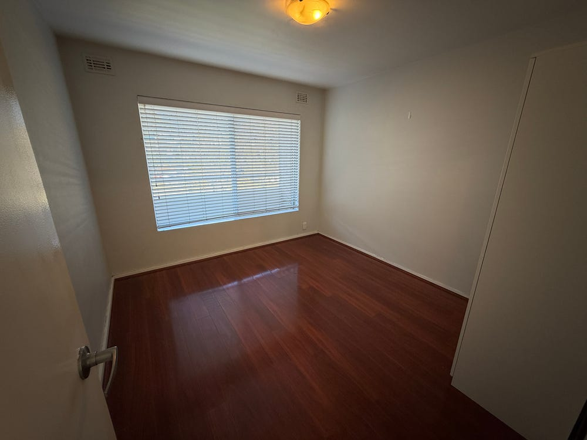

#1$590
5/51-53 Tate Street
West Leederville · 종합 42.6점
Ⓑ 자전거존
종합 42.6 / 64
🟢 하드우드 전실에 조용한 막다른 골목, 마트도 도보권 — 약점이 거의 없는 균형형 1위. 다만 아파트라 마당·수납·뷰는 평범하다.
▼ 상세 보기 (점수 분해 + 매물 설명)
■ 점수 상세
가격5.75/10
$590 → 3 + (700−590)/40=5.75
통근4.97/10
기본+10.0
시간 25분 (10분당 −1)-2.5
환승 1회-1.0
버스 이용-1.0
역도보 158m (300m당 −1)-0.53
🚆 25분(도보 158m): 도보 0.1 km → Cambridge St Before St Leonards Av[83] 7정거장/14 mins → Wellington St Watertown[Yellow CAT] 2정거장/4 mins → 도보 55 m ·환승1회 · ⚡최단 19분(도보 944m)
마트4.4/7
기본+7.0
도보 519m (100m당 −0.5)-2.6
도보 519m 8분 (Coles West Leederville)
소음7/7
Tate Street는 West Leederville 내부 주거 골목으로 조용한 거리 확인
주차2/2
주차 1대
인테리어4.5/5
거실+침실 전체 짙은 레드-마호가니 하드우드 훌륭(마감 5), 80년대 크림벽돌 −0.5 → 4.5
카펫5/5
floor=BARE, 전 공간 하드우드, 카펫 없음
detached1/5
2층 복합 아파트, 발코니 나무뷰, 전용 마당 없음
감성1/3
West Leederville 나무 많고 엽서 같은 동네 +1, 외관 평범, 뷰 없음
안전6.0/7
Tate St 조용한 막다른 주거 골목 +0.5
수납1/3
별도 런드리룸/창고 명시 없음 — BIR만
■ 매물 설명
🏘 동네 — West Leederville는 CBD와 Subiaco 사이에 낀 inner-ring 블루칩. 젠트리피케이션이 끝난 안정형 주거지로, Lake Monger·West Leederville역·카페 스트립이 도보권을 받쳐준다. 이 매물(5/51-53 Tate St)은 광고의 "quiet complex" + 발코니 leafy outlook(잔디·성숙한 가로수)으로 보아 대로 안쪽 조용한 라인. 사진상 번화가 소음·어수선함 신호는 없음.
✅ 좋은 점
· 전실 진한 하드우드(맨발 OK — 네 1순위 조건), 욕실만 타일. 카펫 제로.
· 주방·욕실 업데이트됨: 스톤 벤치탑·스테인리스 후드·가스쿡탑·빌트인 오븐·식기세척기·프레임 샤워.
· 발코니 + 카포트1 + 반려동물 가능(Pets Allowed 명시 — 호주 아파트 렌트에선 드문 플러스).
· 통근 25분(도보 158m, 83번→Yellow CAT)·자전거 11분(3.6km). 도보 158m는 우리 48건 중 최소 그룹 — 도보 부담 사실상 없음.
⚠️ 나쁜 점 / 체크포인트
· 거실만 에어컨, 침실 무에어컨(퍼스 여름엔 본질적 약점 — 창문형 추가 가능성).
· 짙은 적갈색 바닥 + 저층 그늘로 거실이 사진상 어둡고 좁아 보임(실측은 길이가 긴 개방형 LDK).
· 외관 크림 벽돌 = 70-80년대 저층 워크업(구축). 내부 리노 대비 외부는 올드한 인상.
· 빌트인 옷장 미확인(프리스탠딩 옷장만 보임), 거실 좌측 벽 얼룩 1곳.
📐 연식·면적 — 광고에 건축연도·m² 둘 다 없음. 사진 추정: 외부 구축 / 내부 부분 리노, 면적은 "협소하지 않은 표준 2베드"(가구 없는 방이 보통 크기, 복도 과점유 없음). 정확한 m²는 6/13(토) 10:30 inspection 때 직접 확인 항목.
💰 가격 — $590/주(본드 $2,360). 우리 소스(RapidAPI) 기준 West Leederville 2베드 현재 호가 median $800(표본 5건, 550-900) — $590는 median 대비 약 -26%, 호가 하단권. 표본이 작아 변동은 있지만 이 동네에선 확실히 싼 편(어제 "가성비 미쳤다"던 감각이 숫자로도 확인됨). ※ ACHIEVED(체결가) 아닌 ASKING(호가) snapshot.
🆚 어제 비교 (441562152, 같은 West Leederville $550) — 네가 "가성비 미쳤다"던 그 매물. 정면 비교: 어제 건 탑층(Level 4) 코너 + 높은 천장 + 동·북·서 3면 뷰 + 거실·안방 둘 다 에어컨 + 엘리베이터라 채광·뷰는 압승. 그러나 ① 공용 세탁실(RED), ② 제목 그대로 6개월 단기계약 — 네가 치명타로 짚은 두 단점이 그대로다. 이 매물($590, +$40)은 그 둘을 다 해소(전용 세탁·계약기간 제한 없음)하고 반려동물·식기세척기·도보 158m가 더 낫지만, 대신 뷰·채광·침실 에어컨을 내줬다. 한 줄 요약: 어제 건 = 화려하지만 결격 / 이건 = 수수하지만 결격 없음.
✅ 좋은 점
· 전실 진한 하드우드(맨발 OK — 네 1순위 조건), 욕실만 타일. 카펫 제로.
· 주방·욕실 업데이트됨: 스톤 벤치탑·스테인리스 후드·가스쿡탑·빌트인 오븐·식기세척기·프레임 샤워.
· 발코니 + 카포트1 + 반려동물 가능(Pets Allowed 명시 — 호주 아파트 렌트에선 드문 플러스).
· 통근 25분(도보 158m, 83번→Yellow CAT)·자전거 11분(3.6km). 도보 158m는 우리 48건 중 최소 그룹 — 도보 부담 사실상 없음.
⚠️ 나쁜 점 / 체크포인트
· 거실만 에어컨, 침실 무에어컨(퍼스 여름엔 본질적 약점 — 창문형 추가 가능성).
· 짙은 적갈색 바닥 + 저층 그늘로 거실이 사진상 어둡고 좁아 보임(실측은 길이가 긴 개방형 LDK).
· 외관 크림 벽돌 = 70-80년대 저층 워크업(구축). 내부 리노 대비 외부는 올드한 인상.
· 빌트인 옷장 미확인(프리스탠딩 옷장만 보임), 거실 좌측 벽 얼룩 1곳.
📐 연식·면적 — 광고에 건축연도·m² 둘 다 없음. 사진 추정: 외부 구축 / 내부 부분 리노, 면적은 "협소하지 않은 표준 2베드"(가구 없는 방이 보통 크기, 복도 과점유 없음). 정확한 m²는 6/13(토) 10:30 inspection 때 직접 확인 항목.
💰 가격 — $590/주(본드 $2,360). 우리 소스(RapidAPI) 기준 West Leederville 2베드 현재 호가 median $800(표본 5건, 550-900) — $590는 median 대비 약 -26%, 호가 하단권. 표본이 작아 변동은 있지만 이 동네에선 확실히 싼 편(어제 "가성비 미쳤다"던 감각이 숫자로도 확인됨). ※ ACHIEVED(체결가) 아닌 ASKING(호가) snapshot.
🆚 어제 비교 (441562152, 같은 West Leederville $550) — 네가 "가성비 미쳤다"던 그 매물. 정면 비교: 어제 건 탑층(Level 4) 코너 + 높은 천장 + 동·북·서 3면 뷰 + 거실·안방 둘 다 에어컨 + 엘리베이터라 채광·뷰는 압승. 그러나 ① 공용 세탁실(RED), ② 제목 그대로 6개월 단기계약 — 네가 치명타로 짚은 두 단점이 그대로다. 이 매물($590, +$40)은 그 둘을 다 해소(전용 세탁·계약기간 제한 없음)하고 반려동물·식기세척기·도보 158m가 더 낫지만, 대신 뷰·채광·침실 에어컨을 내줬다. 한 줄 요약: 어제 건 = 화려하지만 결격 / 이건 = 수수하지만 결격 없음.


